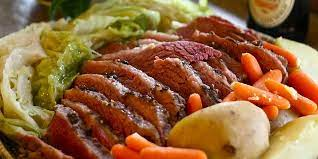

Corned Beef and Cabbage I

Description
What's more Irish than a traditional recipe for corned beef and cabbage?
Serve with mustard or horseradish if desired.
Ingredients
- 3 pounds corned beef brisket with spice packet
- 10 small red potatoes
- 5 carrots, peeled and cut into 3-inch pieces
- 1 large head cabbage, cut into small wedges
Steps
- Place corned beef in large pot or Dutch oven and cover with water.
Add the spice packet that came with the corned beef.
Cover pot and bring to a boil, then reduce to a simmer.
Simmer approximately 50 minutes per pound or until tender.
-
Add whole potatoes and carrots,
and cook until the vegetables are almost tender.
Add cabbage and cook for 15 more minutes.
Remove meat and let rest 15 minutes.
-
Place vegetables in a bowl and cover.
Add as much broth (cooking liquid reserved in the Dutch oven or large pot) as you want.
Slice meat across the grain.